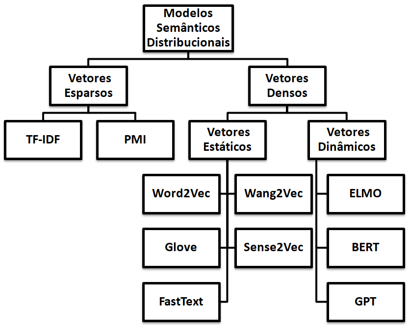
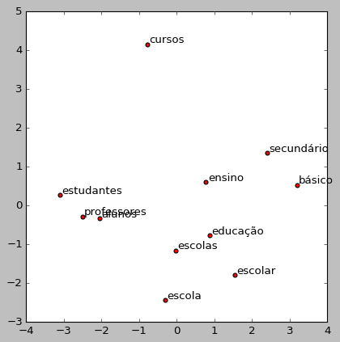
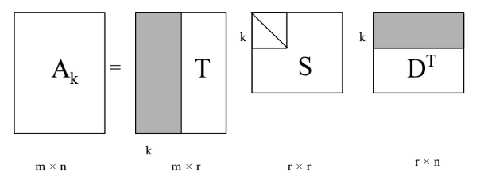
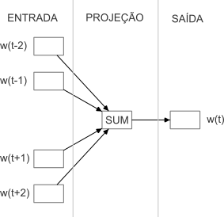
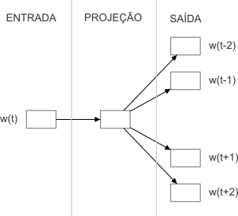
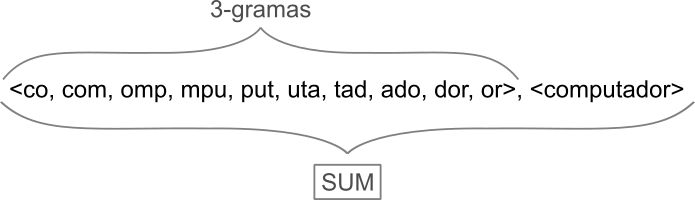
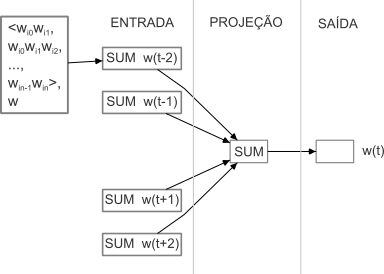

10 Semântica distribucional
É relativamente fácil para nós, seres humanos, visualizarmos um texto e, a partir de uma simples leitura, extrairmos dele determinados tipos de informação. Por exemplo, ao ler o texto “Ser feliz sem motivo é a forma mais autêntica de felicidade.” podemos reconhecer o sentido das palavras e o significado do texto formado pela junção de todas as palavras. Diferente dos humanos, os algoritmos computacionais não conseguem processar símbolos/palavras. Ao invés disso, eles requerem uma representação numérica de um documento ou texto a ser processado, para que consigam realizar suas operações.
A semântica distribucional tem sido atualmente a principal abordagem de representação do significado lexical adotada nas mais diversas tarefas do processamento de linguagem natural. Nessa abordagem, os itens lexicais (palavras) são representados por meio de vetores de valores reais, conhecidos por vetores semânticos, que codificam o significado das palavras a partir de sua distribuição em textos.
A semântica distribucional é ancorada na Hipótese Distribucional (Firth, 1957; Harris, 1954) que preconiza que palavras que têm um contexto linguístico semelhante tendem a ter significado similar ou aproximado. É o caso, por exemplo, de palavras como “ensino” e “educação” que costumam aparecer no mesmo contexto de palavras como “aluno”, “escola” e “professor”, sugerindo que existe uma similaridade entre as duas palavras em certos contextos. Vejamos, por exemplo, a ocorrência dessas palavras nas sentenças a seguir1:
- MEC deve começar a ouvir alunos sobre novo ensino médio em 8 de maio.
- Governo prorroga inscrições para concurso público de professores na rede estadual de ensino.
- Alunos e profissionais da educação terão aulas de comportamento seguro.
- Aluno é colocado em ensino remoto após intimidar e tentar derrubar professor em SP.
Assim, na semântica distribucional as palavras são caracterizadas pelo contexto em que elas aparecem. Por se basearem em distribuição, os vetores semânticos podem ser aprendidos automaticamente a partir de textos, sem que haja supervisão de um humano (utilizando-se textos não rotulados, portanto). Os modelos que aprendem esse tipo de representação são denominados de Modelos Semânticos Distribucionais - MSD (Distributional Semantic Models – DSM, no inglês).
Os MSD são, frequentemente, classificados como vetores esparsos e vetores densos. Por exemplo, o modelo TF-IDF, amplamente adotado em tarefas que envolvem a comparação de similaridade entre documentos, como a detecção de plágio, a inferência textual e a recuperação de informações, é um exemplo clássico de vetor esparso. Nesse modelo, o significado de uma palavra é representado por meio de uma função simples calculada com base na frequência da palavra em uma coleção de documentos, conforme será visto Subseção Atribuindo pesos aos termos da matriz termo-documento com TF-IDF. Como muitas palavras nunca ocorrem em alguns documentos, frequentemente, esse modelo leva a vetores muito grandes e esparsos, ou seja, com muitos zeros. Por outro lado, os modelos da família Word2Vec (Mikolov et al., 2013) são considerados vetores densos (não esparsos), onde as entradas são números reais que representam propriedades semânticas úteis (conforme será abordado na Subseção Word2Vec, ao invés de contagens quase zero.
A Figura 10.1 ilustra a estrutura geral dos Modelos Semânticos Distribucionais. Neste capítulo serão abordados apenas os vetores esparsos e os vetores densos estáticos. Mais especificamente, iniciaremos apresentando os modelos esparsos TF-IDF e PMI (Seção Vetores esparsos) e depois apresentaremos os principais vetores densos estáticos como o Word2Vec, o GloVe e o Fasttext (Seção Vetores densos estáticos). Os vetores densos dinâmicos, por sua vez, como ELMO, BERT e GPT serão abordados no Capítulo Modelos de linguagem. Antes, porém, de apresentar os MSD, introduziremos alguns conceitos fundamentais da semântica vetorial e apresentaremos a similaridade do cosseno (Seção Semântica Vetorial), uma maneira padrão de usar os vetores semânticos para calcular a similaridade entre palavras, sentenças e documentos, que é uma ferramenta fundamental em aplicações práticas como a sumarização automática e a recuperação de informações.

10.1 Semântica Vetorial
As primeiras investigações no campo da semântica vetorial, também conhecida por métodos distribucionais, tiveram início na década de 1950, impulsionadas pela convicção de que o significado de uma palavra pode ser definido a partir da sua distribuição nos contextos linguísticos em que ela ocorre, compartilhada por linguistas como (Joos, 1950), (Harris, 1954) e (Firth, 1957), e pela proposta de (Osgood et al., 1957) de usar um ponto no espaço multidimensional para representar a conotação de uma palavra. Portanto, os métodos distribucionais se definem como uma representação vetorial que retrata o significado de uma palavra a partir da distribuição das palavras que formam o seu contexto (Jurafsky; Martin, 2023). Por exemplo, a Figura 10.2 representa o espaço vetorial semântico da palavra “ensino”2. Palavras como “educação”, “estudantes”, “professores” e “alunos” são alguns exemplos de palavras que compartilham esse mesmo espaço semântico.

A representação vetorial semântica, ou simplesmente vetores semânticos, é um padrão de representação muito usual em PLN, que pode retratar vários aspectos do significado das palavras, como a similaridade (ex. “comércio” e “negócio”); a orientação de sentimento ou polaridade (ex. “fenomenal”, que conota uma avaliação positiva, e “estúpido”, que conota uma avaliação negativa); a associação entre palavras (ex. “futebol” e “bola”, que são claramente relacionados, uma vez que futebol se joga com uma bola), entre outros aspectos.
A ideia dos vetores semânticos é, então, representar cada palavra como um ponto em um espaço vetorial multidimensional, construído a partir da distribuição de suas palavras vizinhas.
Espaços vetoriais são objetos de estudo da Álgebra Linear e são bem caracterizados pela sua dimensão, que, grosseiramente falando, representa o número de direções independentes no espaço. Um espaço vetorial é formado por uma coleção de objetos chamados vetores. Em um Modelo Semântico Distribucional é possível representar palavras, sentenças e até documentos completos como vetores em um espaço multidimensional.
Geralmente, os vetores semânticos são representados por meio de uma matriz de coocorrência (ou distribuição de coocorrência), que retrata a frequência de coocorrência das palavras. As representações matriciais mais comuns são a matriz termo-documento, onde cada dimensão (vetor) da matriz representa um documento, e a matriz termo-contexto, onde cada dimensão representa uma palavra (Jurafsky; Martin, 2023). As subseções a seguir abordam essas duas formas básicas de representação.
10.1.1 Matriz termo-documento
Na matriz termo-documento, o espaço vetorial é formado por uma coleção de documentos3 que representam pontos ou vetores nesse espaço. Cada vetor tem dimensão \(|V|\), onde \(|V|\) representa o tamanho do vocabulário, que contém as palavras distintas (sem repetições) de todos os documentos da coleção. Assim, cada palavra do vocabulário é uma linha na matriz e cada coluna representa um documento da coleção. Cada célula da matriz, por sua vez, representa a frequência de uma palavra em particular em um documento em particular, ou seja, quantas vezes aquela palavra ocorreu naquele documento.
A matriz termo-documento foi definida por (Salton; Allan, 1994) como parte do Modelo de Espaço Vetorial – MEV proposto pelos autores para a recuperação de documentos na web. No MEV, um documento é representado como um vetor de frequência de palavras (ou termos), uma coluna, como no exemplo da Tabela 10.1. Os três documentos representados na tabela, por meio de colunas, representam pontos em um espaço tridimensional. A matriz foi computada a partir de três textos de divulgação científica extraídos da revista online Pesquisa FAPESP4, da seção de Tecnologia, edições 308 e 310 de 2021. Os textos se referem aos seguintes temas: energias renováveis5 (coluna 1), risco de escassez de energia fornecida pelas hidrelétricas brasileiras6 (coluna 2) e veículos elétricos movidos a etanol7 (coluna 3). A matriz da Tabela 10.1 representa apenas um subconjunto das palavras que ocorreram nesses textos. A contagem (frequência) das palavras em cada texto foi realizada considerando a sua forma lematizada.
| energias renováveis | escassez de energia | veículos elétricos | |
|---|---|---|---|
| energia | 32 | 36 | 9 |
| eólico | 15 | 15 | 1 |
| renovável | 6 | 8 | 4 |
| etanol | 1 | 1 | 22 |
| hidrogênio | 0 | 0 | 16 |
Em aplicações reais, os vocabulários têm milhares de palavras e o número de documentos pode ser enorme (imagine todas as páginas da web). Isso frequentemente resulta em vetores muito grandes, levando a matrizes esparsas, já que muitas palavras nunca aparecem em outros documentos. Para lidar com um grande número de dimensões, uma técnica comumente usada é a Análise Semântica Latente (em inglês, Latent Semantic Analysis – LSA), que reduz a dimensionalidade do espaço vetorial através da Decomposição em Valores Singulares (em inglês, Singular Value Decomposition – SVD), conforme veremos na Subseção Reduzindo a dimensionalidade com LSA.
10.1.2 Matriz termo-contexto
Os vetores semânticos também podem ser usados para representar o significado de palavras e não apenas de documentos. Para tanto, ao invés de usarmos uma matriz de termo-documento (como visto na Subseção Matriz termo-documento), usamos uma matriz de termo-contexto, também conhecida por matriz palavra-palavra ou matriz termo-termo.
Na matriz de termo-contexto, o espaço vetorial é formado por uma coleção de palavras que representam vetores nesse espaço. A matriz de coocorrência tem dimensionalidade \(|V| \times |V|\) e cada célula representa o número de vezes que a palavra da linha (alvo) e a palavra da coluna (contexto) coocorrem em algum contexto em um corpus de treinamento. O contexto pode ser, por exemplo, um documento, no qual a célula representa o número de vezes que as duas palavras aparecem no mesmo documento. Entretanto, é mais comum usar contextos menores limitados a um número de palavras à esquerda e à direita da palavra-alvo (linha), por exemplo, três palavras à esquerda e três palavras à direita. Dessa forma, cada célula representa o número de ocorrência da palavra da coluna (contexto) em uma janela de três palavras em torno da palavra-alvo.
A Tabela 10.2 apresenta um subconjunto simplificado da matriz de coocorrência termo-contexto computada a partir dos textos da revista Pesquisa FAPESP descritos na Subseção Matriz termo-documento. As linhas da tabela representam cada palavra-alvo e cada célula indica o número de vezes que a palavra-alvo correspondente coocorreu em cada contexto (colunas). Para a criação da matriz foi considerada uma janela de contexto de tamanho 5, isto é, cinco palavras à esquerda e cinco palavras à direita da palavra-alvo. Para exemplificação, o vetor da palavra-alvo “energia” está destacado em negrito.
| elétrica | geração | combustível | ||
|---|---|---|---|---|
| etanol | 0 | 1 | 10 | |
| veículo | 0 | 0 | 4 | |
| energia | 20 | 5 | 2 | |
| país | 5 | 2 | 0 |
Os vetores que representam palavras são frequentemente denominados de embeddings, embora muitas vezes esse termo seja usado de maneira mais restrita para se referir apenas aos vetores densos como é o caso do Word2Vec, Glove e Fastext (Seção Vetores densos estáticos), e não aos vetores esparsos como o TF-IDF e o PMI (Seção Vetores esparsos).
10.1.3 Calculando a similaridade entre vetores semânticos
Uma tarefa bastante comum do processamento de linguagem natural consiste em calcular a similaridade entre vetores de documentos ou vetores de palavras, seja para estabelecer uma métrica de semelhança entre dois textos ou para se ter uma medida de equivalência entre duas palavras. Para tanto, faz-se necessário o emprego de alguma medida de similaridade entre vetores.
A medida do Cosseno, também conhecida por distância do Cosseno, é sem dúvida uma das mais clássicas da área de PLN. Essa medida calcula a distância entre dois vetores no espaço vetorial a partir do valor do cosseno do ângulo compreendido entre eles. Se o ângulo compreendido for zero (ambos os vetores apontam para o mesmo lugar), a medida resultará no valor 1. Para um ângulo diferente de zero, o valor resultante será inferior a 1. Para vetores ortogonais8, o valor será zero. Se os vetores apontarem em direções contrárias, o valor será -1. Logo, a medida do Cosseno encontra-se no intervalo fechado entre [-1, 1]. Contudo, como os valores de frequência de termos (palavras) são positivos, o cosseno desses vetores encontra-se no intervalo entre [0, 1], sendo que quanto mais próximo de 1 for o valor, maior é a similaridade entre os vetores.
A distância do Cosseno é dada pelo produto escalar entre dois vetores, também chamado de produto interno na Álgebra Linear. Sejam \(x\) e \(y\) dois vetores semânticos \(n\)-dimensionais, ambos representando documentos ou ambos representando palavras, o produto escalar entre \(x\) e \(y\) é definido pela Equação 10.1:
\[ \begin{aligned} && <x,y> = x \cdot y = \|x\|\|y\| Cos \theta \\ &&\nonumber Cos \theta = \frac{x \cdot y}{\|x\|\|y\|} \end{aligned} \tag{10.1}\]
onde <\(x\),\(y\)> representa a somatória dos produtos das coordenadas correspondentes dos vetores \(x\) e \(y\), calculada com base na Equação 10.2, e \(\|v\|\) representa o comprimento do vetor \(v\) definido pela Equação 10.3:
\[ x \cdot y = \sum_{i=1}^{n} x_iy_i = x_1y_1 + x_2y_2 + x_3y_3 + \cdot\cdot\cdot + x_ny_n \tag{10.2}\]
\[\begin{aligned} \|v\| = \sqrt{\sum_{i=1}^{n} v_i^2} \end{aligned} \tag{10.3}\]
Em suma, a distância do Cosseno entre dois vetores \(x\) e \(y\) é definida pela Equação 10.4:
\[\begin{aligned} && \nonumber Cos = \frac{x \cdot y}{\|x\|\|y\|} = \frac{\sum_{i=1}^{n} x_iy_i}{\sqrt{\sum_{i=1}^{n} x_i^2}\sqrt{\sum_{i=1}^{n} y_i^2}} \end{aligned} \tag{10.4}\]
Para fins de exemplificação, consideremos os dois textos do Exemplo 10.1:
Exemplo 10.1
- Eu adorei o filme. Foi incrível.
- Eu detestei o filme. Foi horrível.
Podemos transformar esses textos em vetores que representam a frequência de ocorrência de cada palavra. Para o conjunto de palavras {eu, adorei, detestei, filme, incrível, horrível}, temos os vetores semânticos \(a\) e \(b\), representando o texto 1 e o texto 2, respectivamente:
\(a= [1, 1, 0, 1, 1, 0]\)
\(b= [1, 0, 1, 1, 0, 1]\)
Inicialmente, vamos calcular a somatória dos produtos entre as coordenadas correspondentes de \(a\) e \(b\), conforme a Equação 10.2:
\[\nonumber a \cdot b = 1\cdot1 + 1\cdot0 + 0\cdot1 + 1\cdot1 + 1\cdot0 + 0\cdot1 = 2\]
Em seguida, calculamos o comprimento de cada vetor com base na Equação 10.3:
\[\begin{aligned} &&\nonumber \|a\| = \sqrt{1^2 + 1^2 + 0^2 + 1^2 + 1^2 + 0^2} = \sqrt{4} = 2 \\ \nonumber \\ &&\nonumber \|b\| = \sqrt{1^2 + 0^2 + 1^2 + 1^2 + 0^2 + 1^2} = \sqrt{4} = 2 \end{aligned}\]
Por fim, substituímos os valores já calculados na Equação 10.4, para obtermos o cosseno do ângulo entre os vetores \(a\) e \(b\):
\[\begin{aligned} \nonumber Cos (a,b) = \frac{2}{4} = 0,5 \end{aligned}\]
A similaridade entre os vetores \(a\) e \(b\) é diretamente proporcional ao cosseno do ângulo entre os dois vetores, ou seja, 0,5.
A medida do Cosseno é menos sensível à frequência de ocorrência das palavras em um corpus do que outras medidas de similaridade, como a Distância Euclidiana. Isso significa que as palavras menos frequentes não terão um peso desproporcional no cálculo da similaridade entre os vetores. Essa é principal razão que faz com que essa medida seja tão frequente na Semântica Distribucional e muito usada para calcular a similaridade entre vetores de palavras.
10.2 Vetores esparsos
Vimos nas Seções Matriz termo-documento e Matriz termo-contexto que as matrizes termo-documento e termo-contexto associam a frequência de ocorrência de cada termo ao documento ou contexto em que ocorrem. No entanto, a frequência simples de um termo (isto é, o número de vezes que ele ocorre) é pouco discriminativa, já que algumas palavras (como “porque”, “durante”, “após”, “sobre” etc.) são bastante comuns e não caracterizam nenhum documento ou contexto em particular. Abordagens mais avançadas como é o caso das medidas TF-IDF (do inglês, Term Frequency-Inverse Document Frequency) e PMI (do inglês, Pointwise Mutual Information), costumam ser mais eficazes do que a simples frequência de um termo para discriminar o conteúdo de um documento ou um contexto. Como muitos termos nunca ocorrem em alguns documentos de uma coleção ou nunca aparecem em certos contextos, frequentemente, essas medidas levam a vetores com muitas dimensões e esparsos, ou seja, com muitos valores nulos (zeros). Por essa razão, as matrizes que se utilizam dessas medidas para atribuir valores aos termos são comumente chamadas de vetores esparsos. As medidas TF-IDF e PMI serão detalhadas nas Seções Atribuindo pesos aos termos da matriz termo-documento com TF-IDF e Atribuindo pesos aos termos da matriz termo-contexto com PMI, respectivamente. Em seguida, na Subseção Reduzindo a dimensionalidade com LSA, apresentamos o LSA (do inglês, Latent Semantic Analysis), um modelo muito adotado em PLN com o objetivo de reduzir a dimensionalidade de um espaço multidimensional criado com o uso do TF-IDF ou PMI.
10.2.1 Atribuindo pesos aos termos da matriz termo-documento com TF-IDF
A medida TF-IDF representa uma alternativa mais eficiente do que a contagem de termos para atribuir valores aos termos de uma matriz termo-documento. Ela atribui um peso para cada termo de um documento multiplicando a frequência do termo no documento (TF) pelo inverso da frequência do termo em todos os documentos de um corpus ou coleção (IDF). Dessa maneira, um termo que ocorre muitas vezes em um documento, mas não em muitos documentos da coleção, terá um peso mais alto, enquanto um termo que ocorre em muitos documentos terá um peso mais baixo.
A frequência de um termo (TF) mede a sua importância em um documento. Ela é calculada com base no número de ocorrências de um termo \(t\) em um documento \(d\), dividido pelo total de termos do documento \(d\) (conforme a Equação 10.5). Essa medida é importante porque, em geral, as palavras que aparecem com mais frequência em um documento são mais relevantes para discriminar o seu conteúdo. Porém, TF somente não é suficiente para identificar as palavras mais importantes de um documento, pois algumas palavras podem ser muito frequentes em muitos documentos e, portanto, não auxiliam na discriminação do seu conteúdo. A frequência inversa no documento (IDF) é, então, fundamental, para atribuir um peso maior às palavras que são frequentes mas ocorrem em poucos documentos de uma coleção.
A frequência inversa no documento (IDF) mede, portanto, a importância relativa de uma palavra em uma coleção de documentos. Ela é calculada dividindo-se o número total de documentos da coleção pelo número de documentos que contêm a palavra em questão e tomando o logaritmo desse resultado. Seja \(N\) o número de documentos de uma coleção, o IDF de um termo \(t\) é definido pela Equação 10.6. Em outras palavras, o IDF mede a raridade de uma palavra em um conjunto de documentos. Essa medida é importante porque palavras que aparecem em poucos documentos têm um maior poder de discriminação do conteúdo de um documento.
\[ tf(t,d) = \frac{numero\_ocorrrencias(t,d)}{total\_termos(d)} \tag{10.5}\]
\[ idf(t) = \log \left(\frac{N}{total\_documentos(t)}\right) \tag{10.6}\]
Assim, o TF-IDF de um termo \(t\) de um documento \(d\) é dado pelo produto entre o valor TF (definido pela Equação 10.5) e o valor de IDF (definido pela Equação 10.6), conforme a Equação 10.7:
\[ \verb|tf-idf|(t,d) = \verb|tf|(t,d) * \verb|idf|(t) \tag{10.7}\]
Quanto menor o número de documentos que contêm determinado termo, maior será o TF-IDF daquele termo. Em suma, termos que aparecem com frequência em muitos documentos recebem um peso menor do que os termos mais específicos de um determinado documento. TF-IDF é uma medida bastante versátil e amplamente utilizada em várias tarefas que envolvem o processamento de textos. Alguns exemplos de aplicação mais comuns que podem ser citados são:
- Recuperação de informação: a matriz TF-IDF é usada para classificar e recuperar documentos relevantes com base em termos de pesquisa específicos. Os termos mais importantes, com os valores mais altos de TF-IDF, são usados para classificar a relevância de cada documento.
- Análise de sentimentos: assim como na recuperação de informação, a medida TF-IDF é usada para identificar as palavras mais importantes em um texto e, posteriormente, a polaridade do sentimento associado ao texto (como positiva, negativa ou neutra) é determinada com base nessas palavras.
- Agrupamento de documentos: a matriz TF-IDF também pode ser usada para agrupar documentos que compartilham termos em comum. Os documentos que têm um alto valor de TF-IDF para os mesmos termos são agrupados juntos.
- Sumarização de textos: na sumarização automática a medida TF-IDF pode ser usada para identificar as palavras-chave ou os tópicos mais relevantes de um texto, para gerar o seu resumo.
10.2.2 Atribuindo pesos aos termos da matriz termo-contexto com PMI
Uma forma mais eficaz de pesar os termos de uma matriz termo-contexto, comparada à simples contagem de coocorrência de termos, é usar a medida PMI (do inglês, Pointwise Mutual Information). PMI é uma medida estatística que auxilia na identificação de palavras associadas. Dito de outra forma, ela mede qual é a probabilidade que dois termos ocorram juntos um do outro em relação à probabilidade de cada termo ocorrer de forma independente. Por exemplo, o termo “inteligência artificial” tem um significado específico quando as palavras “inteligência” e “artificial” aparecem juntas em um texto. Quando ocorrem isoladamente, essas duas palavras constroem outros significados.
Formalmente, o PMI entre um termo alvo \(x\) e um termo contexto \(y\) é definido pela Equação 10.8.
\[\begin{aligned} pmi(x,y) = \log_2 \frac{p(x,y)}{p(x) p(y)} = \log_2 \frac{p(x|y)}{p(x)} = \log_2 \frac{p(y|x)}{p(y)} \end{aligned} \tag{10.8}\]
onde:
\[\begin{aligned} \nonumber p(t) = \frac{frequencia(t)}{total\_termos} \end{aligned}\]
A medida PMI leva em consideração, tanto a probabilidade conjunta dos termos (numerador da Equação 10.8), quanto a distribuição geral de cada termo no corpus em que estão sendo analisados (denominador da equação). Vale lembrar que a probabilidade de dois eventos independentes ocorrerem é dada pelo produto das probabilidades dos dois eventos9.
A medida PMI é simétrica, ou seja, \(pmi(x,y) = pmi(y,x)\). Assim, essa medida não considera a ordem de ocorrência das palavras, ou seja, “inteligência artificial” e “artificial inteligência” terão a mesma probabilidade.
Os valores de PMI podem ser negativos ou positivos. O valor de PMI será \(0\) quando \(x\) e \(y\) forem independentes, indicando que não há qualquer associação entre os dois termos. Embora o valor possa ser negativo ou positivo, o resultado esperado é sempre positivo. Valores negativos indicam que os termos estão ocorrendo com menos frequência do que esperaríamos que eles ocorressem ao acaso. A medida PMI é máxima quando \(x\) e \(y\) estão perfeitamente associados (isto é, \(p(x|y)\) ou \(p(y|x) = 1\)). Ou seja, quando os termos têm alta probabilidade conjunta e cada termo tem uma baixa probabilidade de ocorrer isoladamente, como, por exemplo, o termo “fiada” que provavelmente ocorre com maior frequência com o termo “conversa” (na expressão “conversa fiada”) do que isoladamente.
O fato de a medida PMI poder assumir valores positivos ou negativos e sem limites definidos torna mais difícil a interpretação dos resultados. Uma maneira de contornar esse problema é substituir os valores negativos por \(0\), aplicando uma variação de PMI, denominada PPMI (Positive Pointwise Mutual Information), definida pela Equação 10.9:
\[\begin{aligned} ppmi(x,y) = max\left(\log_2 \frac{p(x,y)}{p(x) p(y)}, 0\right) \end{aligned} \tag{10.9}\]
A medida PPMI é motivada pela observação de que valores negativos de PMI tendem a não ser confiáveis, a menos que tenhamos um corpus muito grande e expressivo. Além disso, evita que tenhamos que lidar com valores negativos tendendo ao infinito (\(-\infty\)) para termos que nunca ocorrem juntos (isto é, \(p(x,y) = 0\)). Essa variante da medida PMI é mais robusta e precisa para a construção de modelos semânticos distribucionais, uma vez que ela remove os valores negativos de PMI que podem prejudicar a precisão dos modelos. Em geral, quanto maior for o corpus, mais confiável será a medida de associação.
Embora PPMI seja uma medida útil para quantificar a força da relação entre dois termos em um corpus, ela pode ser muito sensível à frequência dos termos, podendo superestimar a associação entre palavras raras e subestimar a associação entre palavras comuns. Outra limitação das medidas PMI e PPMI é que, por depender somente da coocorrência de palavras no corpus, não levam em consideração a posição das palavras no texto. Isso pode ser um problema em situações em que a ordem das palavras é importante como é o caso das expressões multipalavras.
Medidas de associação de termos como PMI e PPMI são úteis em uma variedade de aplicações de processamento de linguagem natural, conforme exemplificamos a seguir:
- Construção de modelos de linguagem: são úteis para identificar palavras que coocorrem com frequência em corpora, informação relevante que pode ser incorporada em modelos de linguagem, como os modelos Word2Vec e Glove.
- Agrupamento de tópicos: são úteis para o agrupamento de documentos por tópicos com base na identificação de palavras que são altamente correlacionadas a determinado tópico.
- Recomendação de conteúdo/produto: são importantes para recomendar produtos com base nas preferências do usuário, auxiliando na identificação de palavras frequentemente associadas a conteúdos/produtos específicos. Essas associações de palavras são posteriormente usadas para fazer recomendações personalizadas.
- Tradução automática: são úteis para a identificação de palavras que ocorrem frequentemente em um mesmo contexto de tradução.
- Análise de sentimento: são úteis para analisar a opinião ou sentimento expresso em um texto, a partir da identificação de palavras-chave que são altamente correlacionadas com um determinado sentimento, como “bom” ou “ruim”.
10.2.3 Reduzindo a dimensionalidade com LSA
Os modelos TF-IDF e PMI/PPMI apresentados nas Seções Atribuindo pesos aos termos da matriz termo-documento com TF-IDF e Atribuindo pesos aos termos da matriz termo-contexto com PMI frequentemente geram matrizes esparsas contendo muitas células com valor nulo (zero), dado que muitos termos têm baixa frequência em muitos documentos (no caso da matriz termo-documento) ou não ocorrem em muitos contextos em um corpus (no caso da matriz termo-contexto). A esparsidade de uma matriz pode afetar significativamente o desempenho dos algoritmos que a processam, levando a um aumento no tempo de processamento, devido à necessidade de acessar todos valores armazenados, inclusive os valores nulos. Por conter muitos zeros, a matriz esparsa ainda demanda muita memória para poder armazenar todos os valores, mesmo com corpora relativamente pequenos.
Para lidar com esse problema decorrente do grande número de dimensões, é comum o uso de técnicas que permitam reduzir a dimensionalidade de uma matriz. A Análise de Semântica Latente (em inglês, Latent Semantic Analysis – LSA) ou, ainda, Indexação de Semântica Latente (em inglês, Latent Semantic Indexing – LSI), como é chamada na área de recuperação de informação, pode ser aplicada para reduzir a dimensionalidade de um espaço multidimensional. O objetivo principal do LSA é reduzir a dimensão da matriz original, diminuindo a importância de valores singulares menores. Isso ajuda a eliminar ruídos e a capturar as relações semânticas subjacentes entre as palavras.
O LSA pode ser aplicado tanto em matrizes de termo-documento como em matrizes de termo-contexto (ou palavra-palavra). A ideia por trás desse modelo é que existe alguma estrutura semântica latente subjacente nos dados, que é ocultada em certa medida pela incerteza na escolha das palavras. Para estimar essa estrutura latente, o LSA utiliza uma técnica de análise matricial, da Álgebra Linear, chamada Decomposição em Valores Singulares (em inglês, Singular Value Decomposition – SVD) (Golub; Reinsch, 1970), que permite determinar o conjunto de padrões que descreve um documento ou contexto. A SVD encontra os principais eixos de variância no espaço vetorial. Assim, ao decompor uma matriz termo-documento em valores singulares, por exemplo, é possível identificar o conjunto de termos padrão que descreve qualquer documento daquela coleção. Na decomposição, somente as \(k\) dimensões mais importantes da matriz são mantidas. Como resultado, tem-se um espaço semântico no qual termos e documentos semelhantes são colocados próximos uns dos outros.
De maneira geral, decompor uma matriz \(A\) de ordem \(m × n\) (para \(m\) diferente de \(n\)) significa fatorar essa matriz em três matrizes fatores, tal que o produto dessas matrizes permite recompor a matriz \(A\) original. Formalmente, a Decomposição em Valores Singulares de uma matriz \(m × n\) de valores reais \(A\) é igual ao produto de três matrizes fatores \(T\), \(S\) e \(D^T\), conforme segue:
\[ A = TSD^T \]
onde \(T\) e \(D\) são colunas (vetores) ortonormais e \(S\) é a matriz diagonal de valores singulares. As colunas de \(T\) e \(D\) representam os vetores singulares à esquerda (vetores de palavras) e à direita (vetores de documentos ou contextos) de \(A\), respectivamente. A matriz \(A_k\) \(m \times n\) é construída a partir dos \(k\) maiores valores singulares (Figura 10.3).

Na Figura 10.3, \(m\) representa o número de palavras (termos), \(n\) é o número de documentos (ou contextos), \(k\) é a dimensão desejada do espaço de conceitos reduzido, ou seja, representa o total de valores singulares mais significativos a serem mantidos na matriz reduzida e \(r\) é o ranqueamento da matriz \(A\) (\(A(min(m,n)\)).
Durante a construção da matriz termo-documento ou termo-contexto, os valores nas células da matriz representam a frequência com que um palavra ocorre em um determinado documento (ou contexto). Essa coocorrência de palavras gera padrões de associação. Dessa forma, na matriz \(T\) resultante da decomposição SVD, as palavras que possuem semelhanças semânticas são definidas através dos padrões de coocorrência entre palavras nos documentos (ou contextos) originais. Mais especificamente, a matriz \(T\) contém vetores de palavras que representam as relações semânticas latentes entre as palavras no espaço de conceitos. Cada vetor é uma combinação linear ponderada desses conceitos latentes. As palavras que compartilham padrões semânticos semelhantes terão vetores de palavras semelhantes no espaço de conceitos. A similaridade semântica entre palavras pode ser calculada utilizando a distância do Cosseno (Subseção Calculando a similaridade entre vetores semânticos) entre os vetores de palavras no espaço de conceitos. Palavras que são semanticamente similares terão vetores que apontam em direções semelhantes e, portanto, terão valores de similaridade próximos de 1. Essa abordagem permite capturar relações semânticas latentes entre as palavras, mesmo que elas não tenham aparecido juntas frequentemente nos documentos originais. Isso é especialmente útil para encontrar sinônimos, identificar tópicos subjacentes e lidar com a chamada “maldição da dimensionalidade” em dados textuais.
A matriz \(S\) é obtida com base no produto entre a matriz original \(A\) e a sua matriz transposta (\(A^T\)), resultando em uma matriz de dimensão \(n \times n\) (se a matriz original for \(m \times n\)). Em seguida, calculam-se os autovalores e autovetores da matriz resultantes do produto \(A * A^T\). Os autovalores representam a variabilidade dos dados em direções específicas no espaço. Os valores singulares são obtidos a partir dos autovalores. Eles são a raiz quadrada dos autovalores positivos, ordenados em ordem decrescente. A matriz \(S\) é então construída como uma matriz diagonal, onde os valores singulares são colocados na diagonal principal e os demais elementos são zeros. Quanto maior o valor singular, maior a contribuição desse conceito latente na representação dos dados originais. A redução da dimensionalidade envolve manter apenas os primeiros \(k\) valores singulares mais significativos, onde \(k\) é a dimensão desejada no espaço de conceitos reduzido.
A matriz \(D^T\) (de documentos ou contextos para conceitos), por sua vez, é calculada utilizando os autovetores associados à matriz resultante do produto \(A * A^T\). Os autovetores são os mesmos que compõem a matriz \(T\). Eles são normalizados para terem comprimento igual a 1. Isso é importante para garantir que as informações de magnitude não sejam distorcidas. A matriz \(D^T\) é construída colocando os autovetores normalizados como colunas, onde cada coluna representa um vetor de documentos ou de contextos no espaço de conceitos.
Embora o LSA seja uma técnica poderosa para análise de texto e redução de dimensionalidade, o modelo também possui algumas limitações que devem ser consideradas. Por exemplo, ao tratar os termos como entidades independentes, ignorando as relações de contexto mais complexas que ocorrem em linguagem natural, nuances de significado que dependem do contexto podem não ser totalmente capturadas. Tratando as palavras de maneira independente, o modelo também não captura a estrutura sintática da linguagem.
Outra limitação importante é que o LSA tende a ter dificuldade em lidar com documentos muito curtos, uma vez que a coocorrência de termos relevantes é menor e a representação no espaço de conceitos pode ser menos robusta. O LSA é uma abordagem estática, o que significa que não é capaz de lidar bem com mudanças no significado das palavras ao longo do tempo ou em diferentes contextos. Modelos mais recentes, como os baseados em redes neurais, podem lidar melhor com essas nuances.
Embora o LSA capture informações semânticas latentes, os conceitos extraídos nem sempre são facilmente interpretáveis por seres humanos. Isso dificulta a compreensão do que exatamente está sendo capturado em cada dimensão reduzida do espaço de conceitos. Além disso, ele não é capaz de capturar nuances semânticas mais complexas, como a ambiguidade.
Em resumo, o LSA é uma técnica valiosa para muitas tarefas de processamento de linguagem natural, mas é importante estar ciente de suas limitações e considerar outras abordagens, como modelos baseados em redes neurais, para lidar com algumas das desvantagens mencionadas.
10.3 Vetores densos estáticos
Vimos na Seção Vetores esparsos como representar uma palavra por meio de um vetor esparso e com muitas dimensões, correspondentes às palavras do vocabulário ou aos documentos de uma coleção. Nesta seção, introduziremos uma representação de palavras mais robusta, conhecida por embeddings, de vetores densos e menores, com dimensões variando entre 50-1000. Essas dimensões não possuem uma interpretação clara do seu significado (Jurafsky; Martin, 2023).
Os vetores são densos, ou seja, seus valores são números reais positivos ou negativos, ao invés de contagens esparsas, na maioria das vezes zeros, como é o caso dos vetores esparsos vistos na Seção Vetores esparsos. Vetores densos (daqui em diante, embeddings) capturam melhor as relações semânticas e contextuais entre as palavras do que os vetores esparsos. Por exemplo, na representação vetorial esparsa, sinônimos como “alfabeto” e “abecedário” muito provavelmente têm dimensões distintas e não relacionadas, pois esse tipo de modelo pode falhar ao capturar a similaridade entre palavras que estão no contexto de “alfabeto” e “abecedário”. Essa é uma das razões que faz com que os embeddings apresentem melhor desempenho em tarefas de PLN do que os vetores esparsos.
Os embeddings são aprendidos a partir de corpora por meio de algoritmos de aprendizado de máquina supervisionado ou não supervisionado, por exemplo, usando redes neurais artificiais como é o caso do modelo Word2Vec (Subseção Word2Vec), ou, ainda, usando representação estatística da matriz de coocorrência de termos, como é o caso do modelo Glove (Subseção Glove).
Os vetores de embeddings podem ser estáticos ou dinâmicos. Os embeddings estáticos permanecem fixos uma vez aprendidos, ou seja, eles não podem ser ajustados ou modificados para uma tarefa específica. Ao contrário desses, os embeddings dinâmicos podem ser ajustados em tarefas específicas, se adaptando às nuances específicas da tarefa e ao contexto atual. A escolha entre essas abordagens depende das necessidades da aplicação, do domínio e das características das tarefas em que os embeddings serão utilizados.
Nesta seção o foco será apenas na descrição dos embeddings estáticos, mais especificamente, nos modelos Word2Vec (Subseção Word2Vec), Fasttext (Subseção Fasttext) e GloVe (Subseção Glove). Os embeddings dinâmicos como os modelos ElMo, BERT e GPT são abordados no Capítulo Modelos de linguagem.
Os embeddings estáticos podem ser definidos para diversos tipos de unidades de representação, incluindo palavras, caracteres, subpalavras, sentenças e até mesmo textos com várias sentenças. Por exemplo, considere as sentenças do Exemplo 10.2:
Exemplo 10.2
- Vou ao banco sacar dinheiro.
- Adoro sentar no banco da praça.
Considerando o contexto da sentença e o senso comum, o termo “banco” na primeira sentença corresponde a uma instituição financeira cujo significado é distinto do “banco” da segunda sentença que corresponde a um assento. Neste caso, os embeddings estáticos definem um mesmo vetor para representar a palavra “banco” nas duas sentenças, independente do contexto.
Formalmente, as unidades de representação e seus vetores são representados por uma matriz \[M \in \mathbb{R}^{|V| \times d}\] onde \(|V|\) é o tamanho do vocabulário \(V\) e \(d\) é a dimensão do embedding, em geral, um valor entre 50-1000. Cada linha da matriz contém o vetor estático da unidade de representação \(u_i \in V\).
Embora a ideia de representar elementos de um texto usando vetores no espaço multidimensional não seja tão recente (vide, por exemplo, (Joos, 1950), (Harris, 1954), (Firth, 1957), (Osgood et al., 1957)), somente a partir de 2013 os embeddings começaram a ser muito utilizados, com o desenvolvimento e a disponibilização do modelo Word2Vec (Mikolov et al., 2013), conforme explicado a seguir.
10.3.1 Word2Vec
O Word2Vec é uma técnica de aprendizado de unidades de representações distribuídas proposta por Mikolov et al. (2013), que tem como objetivo capturar a semântica e a relação entre unidades de representação em um corpus, aprendendo embeddings estáticos para cada palavra presente no vocabulário de treino (Jurafsky; Martin, 2023). O modelo é baseado na ideia de que palavras que ocorrem em contextos semelhantes têm significados semelhantes. Portanto, ele explora a distribuição de palavras em grandes corpora para aprender representações vetoriais que capturam esses padrões.
O Word2Vec possui duas arquiteturas principais: CBOW – Continuous Bag-of-Words e Skip-gram. Na arquitetura CBOW, o modelo tenta prever uma palavra-alvo com base em um contexto de várias palavras de entrada. O contexto é definido por um conjunto de palavras vizinhas da palavra-alvo. Ao contrário do CBOW, na arquitetura Skip-gram o modelo tenta prever o contexto (palavras vizinhas) de uma palavra-alvo. Dito de outra forma, o Skip-gram tenta encontrar as palavras que normalmente aparecem no contexto da palavra-alvo. Esse método é, em geral, mais lento de treinar, mas muitas vezes gera representações mais precisas.
As subseções CBOW e Skip-gram explicam as arquiteturas CBOW e Skip-gram, respectivamente.
10.3.1.1 CBOW
A ideia principal por trás do CBOW é prever a palavra-alvo com base no contexto. O contexto é definido por um conjunto de palavras vizinhas da palavra-alvo. Por exemplo, na frase “Vou ao banco sacar dinheiro.”, o CBOW tentaria prever a palavra “banco” com base no contexto [Vou, ao, sacar, dinheiro], sendo [Vou, ao] o conjunto de palavras anteriores a palavra-alvo e [sacar, dinheiro] o conjunto de palavras posteriores. Dessa forma, o modelo aprende a associação entre as palavras do contexto e a palavra-alvo.
A arquitetura do CBOW é baseada em uma rede neural de uma única camada oculta (Figura 10.4). A camada de entrada possui um neurônio para cada palavra no contexto. A camada oculta (camada de projeção) tem um número fixo de neurônios, que é um hiper-parâmetro definido antes do treinamento. A predição da palavra-alvo \(w(t)\) é feita base nas palavras de histórico e palavras futuras e o resultado calculado na saída da projeção é a média de todos os vetores de todas as palavras presentes no contexto da camada de entrada. Este modelo pode prever tanto palavras anteriores como posteriores a uma palavra-alvo em um contexto.

Fonte: Adaptado de (Mikolov et al., 2013)
O treinamento do modelo utilizando a arquitetura CBOW é dada pela Equação 10.10, onde \(N\) é o tamanho da camada de projeção, isto é, o número de neurônios da camada oculta; \(D\) é a dimensão dos vetores; e \(V\) é o vocabulário. A primeira parte da fórmula, \(N \times D\), refere-se à multiplicação de matrizes durante o treinamento. A segunda parte, \(D \times \log_2(V)\), está relacionada ao softmax, usado para calcular a probabilidade de cada unidade de representação no vocabulário \(V\) ser a representação de destino, com base nos vetores das representações de entrada.
\[ Q = N \times D + D \times \log_2(V) \tag{10.10}\]
O softmax é uma generalização da função sigmoid que converte um vetor numérico em um vetor de probabilidades de possíveis saídas (Jurafsky; Martin, 2023), com valores dentro do intervalo [0,1] perfazendo um somatório de 1, como representado na Equação 10.11.
\[ softmax(v_i) = \frac{exp(v_i)} {\sum_{j=1}^{|V|} exp(v_j)} \tag{10.11}\]
Assim, a função softmax tem por objetivo converter um vetor numérico em um vetor normalizado de probabilidades.
10.3.1.2 Skip-gram
Enquanto o modelo CBOW prevê a representação de uma unidade (e.g. palavra) com base nos contextos em que ela ocorre em um corpus de treinamento, o modelo Skip-gram tenta prever o contexto (ou as representações vizinhas) a partir de um alvo. Considerando as representações como palavras. Nesta arquitetura, cada palavra é uma entrada para uma rede neural similar à arquitetura do CBOW, com camada de projeção para prever palavras dentro de um determinado intervalo antes e depois da palavra de entrada, conforme Figura 10.5. Utilizando o mesmo exemplo anterior, o Skip-gram recebe a palavra “banco” como entrada e tenta prever o contexto “Vou, ao, sacar, dinheiro”. Essa abordagem permite que o modelo aprenda a representação de uma palavra, considerando as palavras que normalmente aparecem ao seu redor.
Nesta arquitetura do Skip-gram, aumentar o tamanho do intervalo resulta em vetores melhores; entretanto, isso também aumenta a complexidade computacional do algoritmo. A complexidade do treinamento do modelo utilizando a arquitetura Skip-gram é proporcional à Equação 10.12, onde \(C\) é a distância máxima entre as palavras.
\[ Q = C \times (D + D \times \log_2(V)) \tag{10.12}\]
O Skip-gram parte da ideia de que é mais provável que uma palavra ocorra próxima a uma palavra-alvo se seu vetor for similar ao vetor desta palavra-alvo. Esse cálculo de similaridade é baseado na similaridade do Cosseno (Subseção Calculando a similaridade entre vetores semânticos).
Em suma, o Skip-gram treina um classificador que, dada uma palavra-alvo e seu contexto, calcula uma probabilidade do quão similares são o contexto e a palavra-alvo. Quanto mais distantes forem os vetores do contexto e da palavra-alvo, menos relacionados são a palavra-alvo e o contexto e, portanto, menor será o peso daquele contexto no treinamento (Mikolov et al., 2013).

Fonte: Adaptado de (Mikolov et al., 2013)
10.3.1.3 Treinamento do Word2Vec
O processo de treinamento do Word2Vec envolve a criação de um vocabulário a partir do corpus. Durante o treinamento, o modelo ajusta os valores desses vetores para maximizar a capacidade de prever a palavra-alvo ou o contexto, dependendo da arquitetura escolhida.
Embora considerada mais complexa que a CBOW, a abordagem Skip-gram é mais comumente utilizada com a técnica de amostragem negativa (Skip-gram with Negative Sampling – SGNS). Na amostragem negativa apenas um subconjunto de palavras negativas (palavras não contextuais) é selecionado para a atualização dos pesos, ao invés de ajustar os pesos de todas as palavras no corpus a cada iteração. Isso torna o treinamento mais eficiente computacionalmente, aprendendo boas representações, especialmente para palavras mais frequentes (Mikolov et al., 2013).
Uma vez treinado, o modelo Word2Vec é capaz de fornecer representações vetoriais para palavras (embeddings), nas quais palavras semanticamente similares são mapeadas para regiões próximas do espaço vetorial.
10.3.1.4 Limitações do Word2vec
Apesar das vantagens de se utilizar o modelo Word2Vec, é importante destacar que o mesmo possui algumas limitações. Embora o modelo Word2Vec capture as relações semânticas entre palavras, as palavras com múltiplos sentidos podem ser ambíguas dependendo do contexto, dificultando a precisão da representação.
Outra limitação do Word2Vec é que ele não lida bem com palavras raras ou fora do vocabulário; consequentemente essas palavras podem gerar representações vetoriais pouco confiáveis. Além disso, a arquitetura Skip-gram não captura explicitamente relações sintáticas, tais como relações entre adjetivos, verbos, por exemplo. Sendo assim, para tarefas que exigem um entendimento mais profundo da estrutura gramatical, outros modelos ou técnicas podem ser mais adequados.
Além da questão da representação de palavras do vocabulário, o modelo não leva em consideração questões morfológicas e ignora a estrutura interna das palavras, o que é uma limitação especialmente para línguas morfologicamente ricas, ou seja, que possuem uma grande variedade de morfemas que podem para expressar diferentes funções gramaticais e que podem ser adicionados, alterados ou combinados para criar diferentes formas de palavras e estruturas gramaticais dentro da língua, como Árabe ou Finlandês.
Por fim, o Word2Vec não lida diretamente com a concatenação de palavras como uma única unidade. Por exemplo, o modelo não conseguiria reconhecer a palavra “pontapé”, se ela não estivesse presente no vocabulário, mesmo se o vocabulário de treino contivesse as palavras “ponta” e “pé”. No entanto, existem variações do modelo que permitem capturar informações contextuais mais ricas, como o modelo Fasttext descrito a seguir.
10.3.2 Fasttext
O Fasttext é uma extensão do modelo Word2Vec criada pelo grupo Facebook AI Research (FAIR), que amplia o conceito do Skip-gram, no qual cada palavra é representada como uma combinação de n-gramas de caracteres. O modelo leva em consideração não apenas as palavras individuais, mas também as subpalavras (morfemas) que compõem as palavras. Isso permite que o Fasttext consiga melhor representar as palavras fora do vocabulário e consequentemente, captura informações contextuais mais ricas, especialmente em idiomas com aglutinação e morfologia complexa.
A principal diferença em relação ao Word2Vec está no tratamento das palavras, ou seja, ao invés de tratá-las como uma única unidade, o Fasttext as divide em n-gramas menores, como n-gramas de caracteres, e as representa como a soma de seus n-gramas.
Mais especificamente, cada palavra w é representada como um saco de caracteres (bag of characters). Para cada palavra, são adicionados os símbolos ‘<’ e ‘>’ denotando o início e fim das palavras, respectivamente. Isso permite a distinção entre prefixos, sufixos e outras sequências de caracteres. Além disso, a própria palavra w é incluída no conjunto de n-gramas, para aprender um embedding para cada palavra além dos n-gramas dos caracteres.
A Figura 10.6 apresenta um exemplo de saco de caracteres da palavra “computador”, considerando \(n=3\) para o tamanho dos n-gramas. É importante ressaltar que a sequência “<computador>” tem como 3-gramas de caracteres palavras do português como “com” e “dor”; entretanto, as sequências “com” e “dor” são diferentes dos trigramas “com” e “dor” da palavra “<computador>”. Também é possível capturar como informação o prefixo “com” e sufixo “dor” da palavra.

Segundo Bojanowski et al. (2017), o modelo extrai os n-gramas para \(n\) maior ou igual a 3 e menor ou igual a 6. Diferentes conjuntos de n-gramas podem ser considerados, por exemplo, tomando todos os prefixos e sufixos.
Em termos arquiteturais, o FastText também possui duas arquiteturas assim como o Word2Vec: CBOW – Continuous Bag-of-Words e Skip-gram.

A Figura 10.7 exemplifica o funcionamento do FastText com a arquitetura CBOW. Essa arquitetura prediz a palavra-alvo com base no contexto. Cada embedding é gerado a partir dos vetores dos n-gramas, neste exemplo, sendo bigramas.
10.3.2.1 Limitações do FastText
Embora o FastText seja um modelo eficiente e útil para muitas tarefas de processamento de linguagem natural, ele também possui algumas limitações. A primeira é a representação limitada do contexto. Nesse modelo, os textos são representados como a soma das representações de vetor de palavras individuais. Isso significa que o Fasttext não captura informações de ordem ou estrutura sintática mais complexa nos textos.
Outra limitação importante é que o modelo é sensível ao tamanho do vocabulário. Em outras palavras, o FastText requer uma representação de vetor de palavras predefinida para cada palavra no vocabulário. Isso pode levar a problemas de dimensionamento, quando se lida com vocabulários muito grandes, pois o espaço vetorial se torna maior e o treinamento e a inferência podem se tornar mais lentos e exigentes em recursos computacionais.
Embora o FastText seja eficaz em muitos idiomas, pode não funcionar tão bem em idiomas com morfologia muito complexa, onde as palavras se desdobram em várias formas com significados diferentes. Em tais casos, modelos que incorporam informações morfológicas mais profundas podem ser mais apropriados.
É importante notar que as limitações do FastText não o tornam inadequado para todas as tarefas de processamento de linguagem natural. Ele continua sendo uma escolha sólida para muitos cenários devido à sua eficiência e simplicidade, mas é importante considerar essas limitações ao decidir qual modelo utilizar em um projeto específico. Em tarefas mais complexas e em idiomas com características particulares, pode ser necessário explorar modelos mais avançados como os modelos contextualizados abordados no Capítulo Modelos de linguagem.
10.3.3 Glove
Ao explorar modelos de embeddings estáticos como Word2Vec e FastText, é importante mencionar outra abordagem: o modelo GloVe (Global Vectors for Word Representation) (Pennington et al., 2014). Enquanto o Word2Vec e o FastText se concentram principalmente na relação local entre as palavras, o GloVe adota uma perspectiva global, levando em consideração a contagem de coocorrência palavra-palavra em um corpus. Essa abordagem permite que o GloVe capture informações de relação semântica e sintática entre as palavras.
O GloVe é um modelo global de regressão log-bilinear, que relaciona as variáveis dependentes e independentes por meio de uma função logarítmica (Pennington et al., 2014). Uma função log-bilinear é uma função não linear que tem como argumentos dois vetores. Neste modelo, a regressão log-bilinear é aplicada para estimar os vetores de palavras e as matrizes de transformação necessárias para mapear as palavras em um espaço vetorial.
Primeiramente, uma matriz de coocorrência é construída a partir de um corpus de textos. Essa matriz registra quantas vezes duas palavras aparecem juntas em uma janela de contexto. A partir da matriz de coocorrência, é construída uma matriz de probabilidade que representa a probabilidade condicional de uma palavra ocorrer perto de outra palavra. Essa matriz tenta capturar a relação entre as palavras considerando suas frequências relativas de coocorrência. O objetivo do GloVe é encontrar representações vetoriais para palavras de forma que a relação entre os vetores corresponda à relação entre suas probabilidades de coocorrência. Isso é formulado como uma função de perda que minimiza o erro entre as relações de coocorrência reais e as estimadas. O modelo é treinado ajustando os vetores de palavras para minimizar a função de perda. Isso é feito usando um algoritmo de otimização, o Gradiente Descendente Estocástico (Stochastic Gradient Descent – SGD). O SGD é um algoritmo de otimização para ajustar os parâmetros de um modelo de acordo com uma função de custo a ser minimizada.
Ao utilizar uma combinação das vantagens dos métodos existentes (fatoração de matriz global e janela de contexto local), há uma análise das propriedades dos modelos que não eram totalmente exploradas e argumentam que o ponto de partida apropriado para o aprendizado de embeddings deve ser com proporções de probabilidades de coocorrência, ao invés das próprias probabilidades (Pennington et al., 2014).
Considerando a matriz de contagens de coocorrência palavra-palavra denotada por \(X\), cuja entrada \(X_{ij}\) tabula o número de vezes que a palavra \(j\) ocorre no contexto da palavra \(i\) e seja \(X_i = \sum_k X_{ik}\) o número de vezes que qualquer palavra aparece no contexto da palavra \(i\), tem-se que \(P_{ij} = P(j|i) = X_{ij}/X_i\) é a probabilidade de que a palavra \(j\) apareça no contexto da palavra \(i\).
De maneira geral, o modelo GloVe busca converter \(X\) em matrizes de atributos \(W\), onde as linhas de \(W\) são preenchidas por palavras do vocabulário e cada coluna corresponde a uma dimensão no espaço vetorial (Pennington et al., 2014).
A proporção de coocorrência (\(P_{ik}/P_{jk}\)) depende de três palavras, \(i\), \(j\), e \(k\), de forma que o modelo mais geral assume a forma:
\[ F(w_i, w_j, \widetilde{w}_k) = \frac{P_{ik}}{P_{jk}} \tag{10.13}\]
onde \(F\) distingue palavras relevantes de palavras irrelevantes da seguinte maneira:
- Se a palavra \(k\) estiver relacionada às palavras \(i\) e \(j\) (\(P_{ik}\) e \(P_{jk}\) são grandes), ou não relacionada às palavras \(i\) e \(j\) (\(P_{ik}\) e \(P_{jk}\) são pequenos), então o valor de \(F\) seria próximo de 1.
- Se a palavra \(k\) estiver relacionada exatamente a uma das palavras \(i\) ou \(j\), então o valor de \(F\) estaria longe de 1.
Como os espaços vetoriais são estruturas inerentemente lineares, a maneira mais natural de codificar a informação presente em \(P_{ik}/P_{jk}\) é com diferenças vetoriais. Sendo assim é possível restringir \(F\), modificando a Equação 10.13 para
\[ F(w_i - w_j, \widetilde{w}_k) = \frac{P_{ik}}{P_{jk}}. \tag{10.14}\]
A função de custo \(J\) do modelo tem como objetivo aprender vetores de palavras otimizados para prever as probabilidades de co-ocorrência de palavras no corpus e é dada pela Equação 10.15:
\[ J = \sum_{i,j=1}^{V}f(X_{ij})(w_i^T\widetilde{w}_j+b_i+\widetilde{b}_j-\log X_{ij})^2 \tag{10.15}\]
onde \(V\) é o tamanho do vocabulário e \(b\) é bias (ou viés) (Jurafsky; Martin, 2023) que leva em conta a frequência de cada palavra. \(f(X_{ij})\) é uma função de ponderação introduzida para compensar \(X_{ij}\), uma vez que \(log(X_{ij})\) é indefinido nesse ponto, e também para equilibrar a contribuição de palavras frequentes e pouco frequentes para o modelo.
Para a função de custo \(J\), a função \(f\) deve obedecer às seguintes propriedades (Pennington et al., 2014):
1ª propriedade:
- \(f\) deve satisfazer \(f(0) = 0\). Se \(f\) for contínua, deve desaparecer como \(x \rightarrow 0\) rápido o suficiente dado que o \(\lim_{x \rightarrow 0} f(x)\log^2x\) é finito;
2ª propriedade:
- \(f(x)\) deve ser não decrescente para que raras coocorrências (pequeno \(x\)) não tenham excesso de peso (tem \(f\) relativamente grande);
3ª propriedade:
- \(f(x)\) deve ser relativamente pequeno para grandes valores de x, para que as coocorrências frequentes não sejam sobrecarregadas.
Partindo dessas propriedades, Pennington et al. (2014) propõem a função \(f(x)\):
\[ f(x)=\left\{\begin{matrix}(x/x_{max})^\alpha) & \textrm{if } x<x_{max}\\ 1 & \textrm{c.c.} \end{matrix}\right. \tag{10.16}\]
onde \(x_{max}\) e \(\alpha\) são hiper-parâmetros.
O resultado do modelo é um conjunto de representações vetoriais de palavras que capturam as relações entre as palavras em termos semânticos e sintáticos. Esses vetores podem ser usados em diversas tarefas de PLN.
O GloVe tem capacidade para capturar informações semânticas mais abrangentes em comparação aos outros métodos de representação vetorial de palavras, devido à abordagem de coocorrência global ponderada.
10.3.3.1 Limitações do Glove
Apesar das vantagens do GloVe em relação às tarefas de analogia e similaridade, cabe destacar algumas limitações do método. Em virtude de seu treinamento necessitar de uma matriz de contagem de coocorrência palavra-palavra, o modelo consome muito espaço de memória; além disso, assim como o Word2Vec, o GloVe não consegue lidar com palavras fora do vocabulário e ignora a morfologia das palavras.
Em síntese, GloVe é um modelo de representação vetorial de palavras que utiliza informações de coocorrência global entre palavras no corpus e estima os parâmetros do modelo por meio de regressão log-bilinear. Essa abordagem visa capturar relações mais abrangentes entre as palavras e obter vetores de palavras mais informativos e precisos.
10.4 Considerações finais
As representações vetoriais geradas pelos modelos Word2Vec, Fasttext e GloVe têm uma dimensionalidade menor em comparação com os vetores esparsos baseados em abordagens como TF-IDF e PMI/PMMI, o que ajuda a reduzir o custo computacional e a dimensionalidade dos dados. Outra vantagem dos embeddings é que eles podem ser transferidos e usados como recursos em tarefas de aprendizado de máquina relacionadas, melhorando o desempenho de modelos em tarefas de PLN com conjuntos de dados menores.
Embora os embeddings apresentem algumas vantagens em relação aos modelos esparsos, nos embeddings estáticos cada palavra tem uma única representação, independentemente do contexto em que a palavra ocorre. Isso limita a capacidade de compreender a ambiguidade nas palavras. Além disso, por se tratarem de modelos estáticos, ou seja, que não são atualizados durante o treinamento da tarefa na qual são empregados, eles podem não se adaptar bem a tarefas específicas, especialmente aquelas que exigem informações contextuais específicas da tarefa como é o caso da análise de sentimentos, resolução de ambiguidades e tradução automática. Há que se considerar, ainda, que a língua natural está em constante evolução, e o significado das palavras pode mudar ao longo do tempo. Os embeddings estáticos não conseguem capturar essas mudanças.
Para tentar contornar esses problemas dos embeddings estáticos, permitindo o ajuste do modelo durante o treinamento da tarefa específica, várias abordagens baseadas em embeddings dinâmicos têm sido estudadas na literatura recentemente. Ao contrário dos vetores estáticos, os vetores dinâmicos se adaptam ao vocabulário e às características específicas da tarefa, capturando informações contextuais, pois consideram o contexto em que cada palavra é usada em um documento ou sentença. Isso permite lidar melhor com palavras polissêmicas, tornando os embeddings mais adequados para tarefas que dependem do contexto.
Os modelos de embeddings dinâmicos são o assunto do Capítulo Modelos de linguagem.
Sentenças retiradas de títulos de notícias retornadas pelo Google, em 18/04/2023, a partir dos termos de busca “ensino” e “educação” combinados com “aluno”, “escola” e “professor”.↩︎
http://nilc.icmc.usp.br/nilc/index.php/repositorio-de-word-embeddings-do-nilc↩︎
O termo “documento” é usado nesta seção de forma genérica, podendo se referir a sentenças, parágrafos ou documentos completos.↩︎
https://revistapesquisa.fapesp.br/sob-o-risco-da-escassez/↩︎
https://revistapesquisa.fapesp.br/eletricos-movidos-a-etanol/↩︎
Dois vetores são ortogonais se o Produto Escalar entre eles é nulo (zero), conforme veremos na Equação 10.1.↩︎
Os dois últimos termos da Equação 10.8 são considerados equivalentes pelo Teorema de Bayes.↩︎